Lab 6 - Custom Global Variable Reporting
Objectives:
Learn how to do Call Type equivalent non-queue reporting using the global variables configured in previous labs
Introduction to WxCC reporting module as compared to CUIC
Understanding terminology and how they differ from CUIC.
Explore standard and “transition” reports used to help migrations.
Configure and modify several simple custom reports to meet equivalent CCE reporting requirements.
Prerequisites:
Instructions: Lab 6
Within Collaboration Control Hub à Contact Center à Customer Experience
Click on “Flows”
Open “STUxx_Lab4” IVR flow and place in edit mode
Update the flow name: STUxx_Lab6
Click “Save”
Click on “WelcomeMessage” node and update the “Text-to-speech message”: You have reached lab 6 flow where we are working on Webex Contact Center Analyzer reporting.
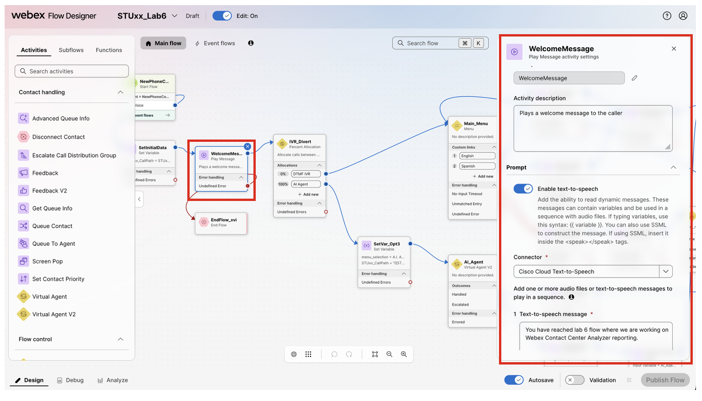
Click on the “IVR_Divert” mode and move the IVR_Divert node allocation to 100% DTMF IVR option and 0% AI Agent
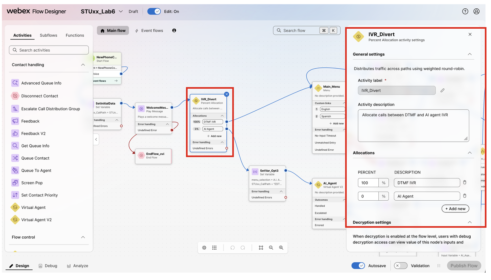
Click on the Main_Menu node
Update TTS for menu to insert:
Press 3 for AI Agent.
Press 4 to transfer externally
Otherwise, stay on the phone
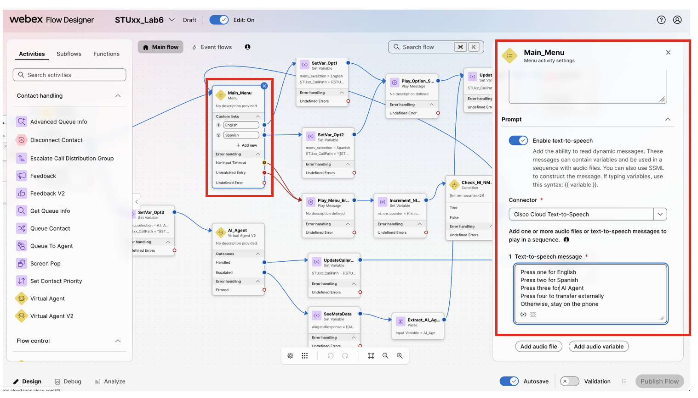
Under the “Custom menu links” section
Click an “+ Add new” for a new menu option
Select “3” for Digit Number
Update Link Description to: AI Agent
Click an “+ Add new” for a new menu option
Select “4” for Digit Number
Update Link Description to: External Transfer
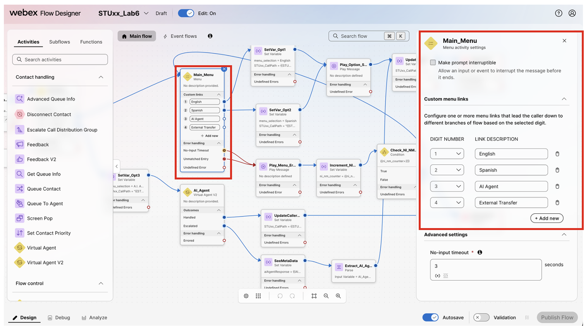
Copy/Paste the SetVar_Opt3 node
Select the new SetVar node
Activity label: SetVar_Opt4
For the menu_selection variable, set value: “External Transfer”
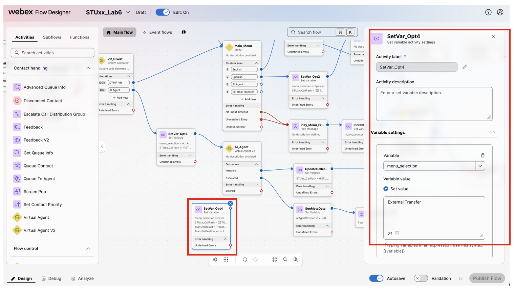
For the STUxx_CallPath variable, set value: {{STUxx_CallPath}}.externaltransfer
Click on “+Add new” for new variable to set
Select “TransferResult” global variable
Update the set value to: “TransferComplete”
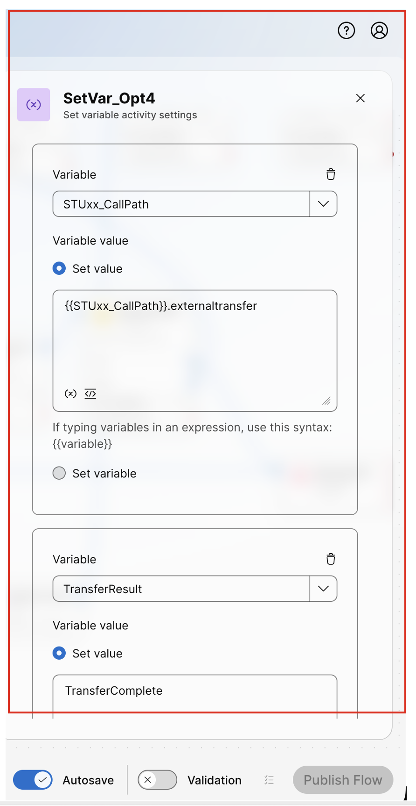
Click on “+Add new” for new variable to set
Select “TransferDestination” global variable
Update the set value to: “18186270745”
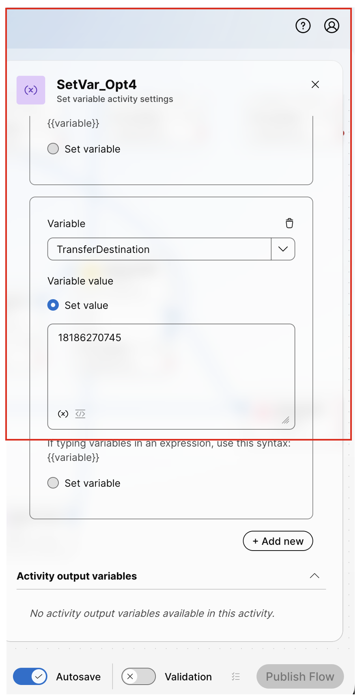
Drag a Bridged Transfer node to the canvas
Select the Bridged Transfer node
Activity label: BridgedTransfer_External
Click on “Variable dial number”
Select “TransferDestination” from pull down
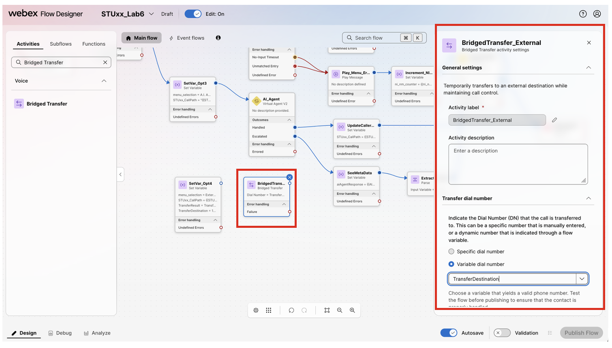
Drag a Set Variable Node to the canvas
Select the new Set Variable node
Activity label: SetVar_TransferResult_Fail
Variable settings à Variable: TransferResult
Enter Set Value: Failed: {{BridgedTransfer_External.FailureDescription}} ({{BridgedTransfer_External.FailureCode}}
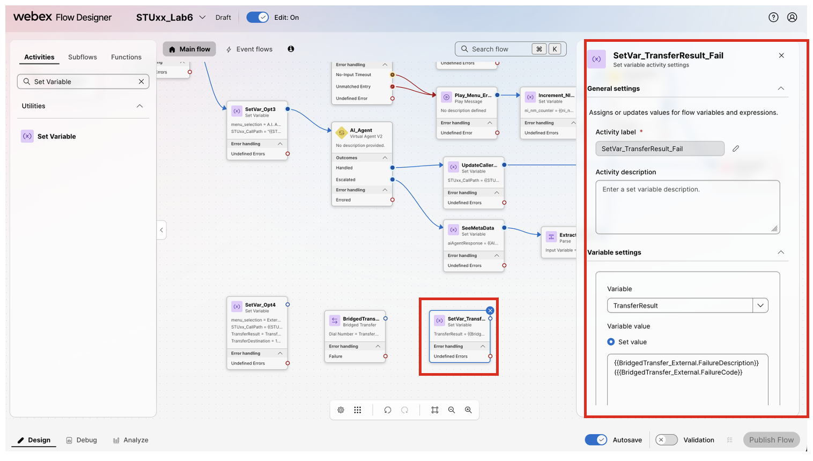
Connect the Main_Menu AI Agent option 3 path to the SetVar_Opt3 node.
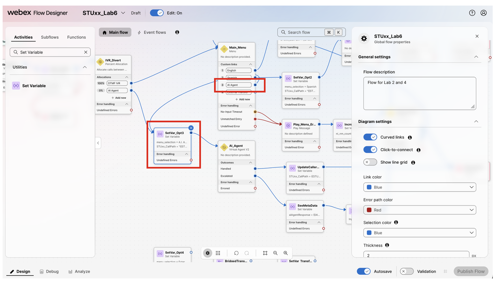
Connect the Main_Menu External Transfer option 4 path to the SetVar_Opt4 node.
Connect the SetVar_Opt4 exit to the BridgedTransfer_External node.
Connect the BridgedTransfer_External exit path to a DisconnectContact node
Connect the BridgedTransfer_External failure path to the SetVar_Transfer_Fail node
Connect the SetVar_Transfer_Fail node to the UpdateCallPath_Queue node.
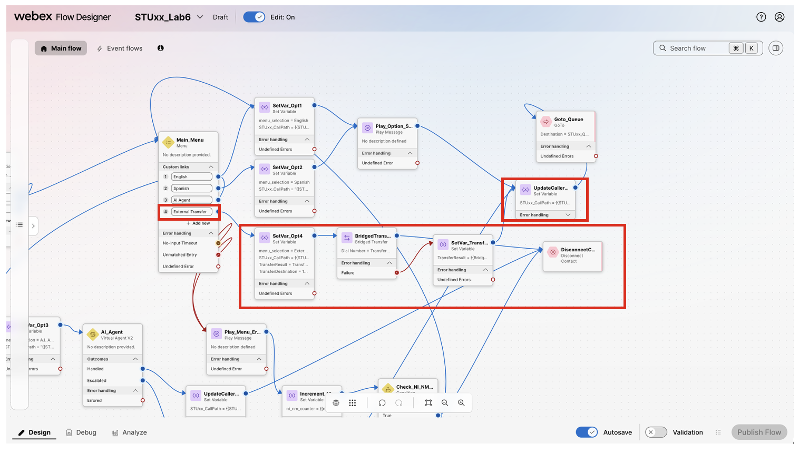
Click Validation
Use the 9 dots to neatly arrange your flow with the newly-added nodes.
Click Publish Flow as Latest
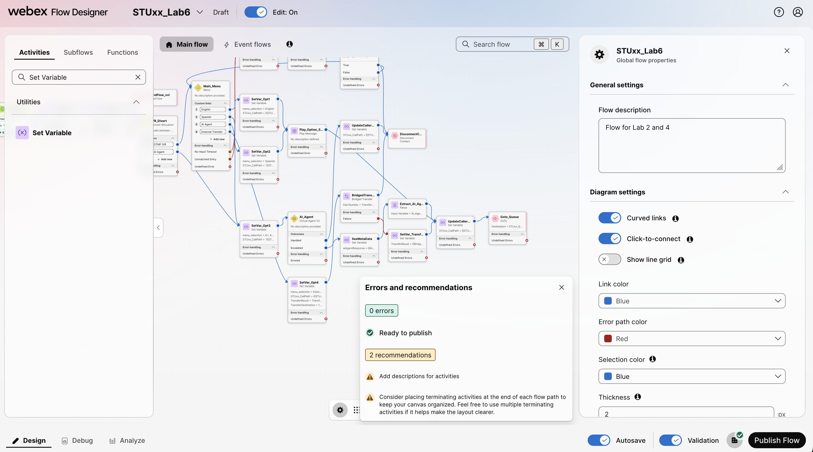
Make some test calls to option 4.
Feel free to change the number to your flows number or another number to test success.
Within Collaboration Control Hub à Contact Center à Overview à Quick Links
Click on Analyzer
This will cross-launch the analyzer reporting module
On the upper hand corner of the screen Click “Create new” and select “Folder”
Name the folder: “STUxx_Reports”
Click Create
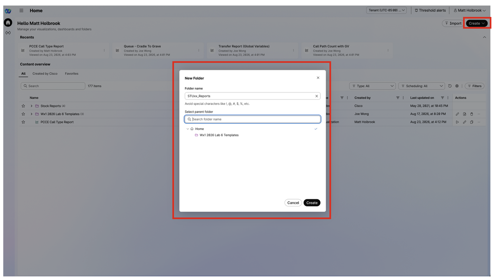
Double click into the “Wx1 2026 Lab 6 Templates” Folder
Click on the 3 dots on the right of the “Call Path Count with GV” report
Select Export
Select Template
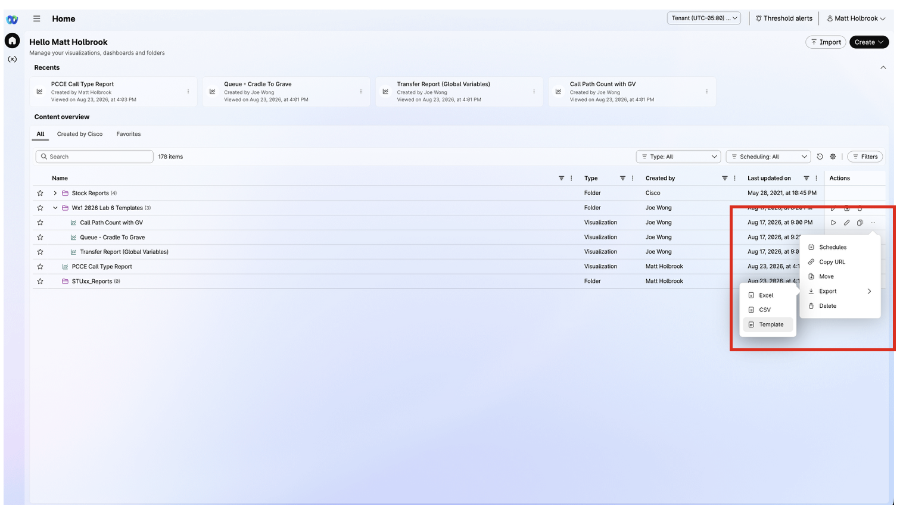
Click on the 3 dots in the “Queue-Cradle To Grave” report
Select Export
Select Template
Click on the 3 dots in the “Transfer Report (Global Variables)” report
Select Export
Select Template
Click on “Import” button on top right corner of the screen
Browse and select “Call Path count with GV.json” file
Select your STUxx_Reports folder
Click Import
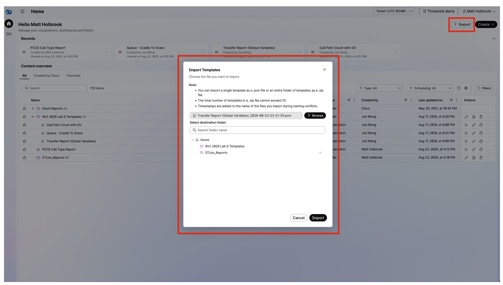
Repeat for the other 2 reports
Click on the 3 dots for “Call Path Count with GV” report
Click Edit (pencil icon)
Click Edit to the right of “Module1”
Change Name to Call Path
Click “OK”
Click the down arrow next to “start Time” and select “This Year”
Delete “CallerIntent” under “+Row Segments”
Click on “+Row Segments” button
Search/Find your “STUxx_CallPath” variable from the list.
Click and drag to area under the “+Row Segments”
Click “Save”
Click “Preview”
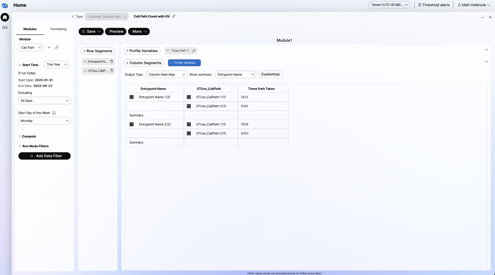
Click on “X” in upper right to go back to folder.
Click on the 3 dots for “Call Path Count with GV” report
Select “Schedules”
Job Name: STUxx_Test_Report
Start Date: current date
Timestamp: closest 15-minute time interval
Timezone: (-05:00) US/Central
Recurrence: Never
Email: Enter your email address
Subject: Test email from Analyzer
Message: Test report of Call Path Count with GV for today”
Output: Excel
Click Save
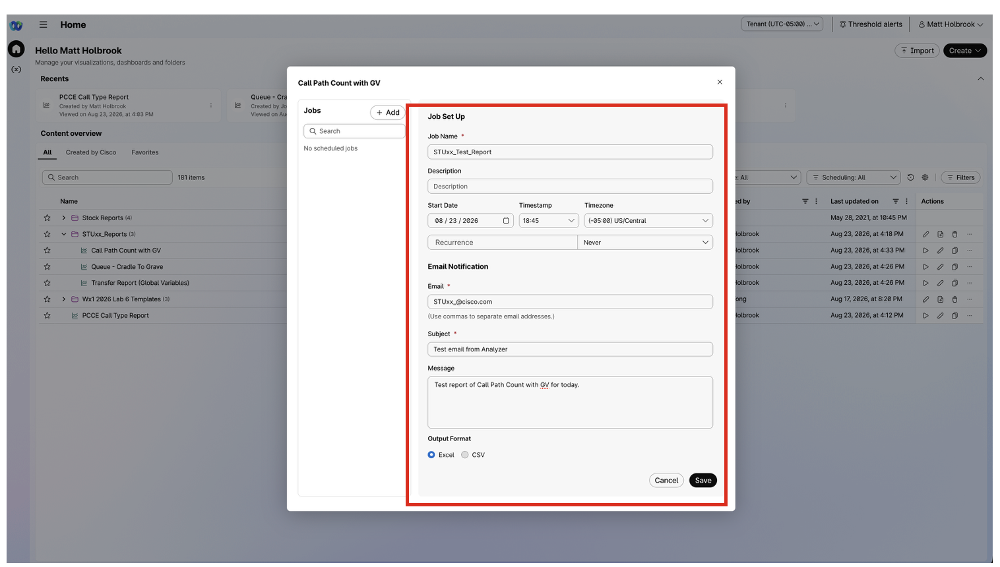
Click “Edit” for “Transfer Report (Global Variables)” report
Expand “Run Mode Filters” on the left side menu
Uncheck “Transfer Count” and “Transfer Results Count”
Check “Entrypoint Name”
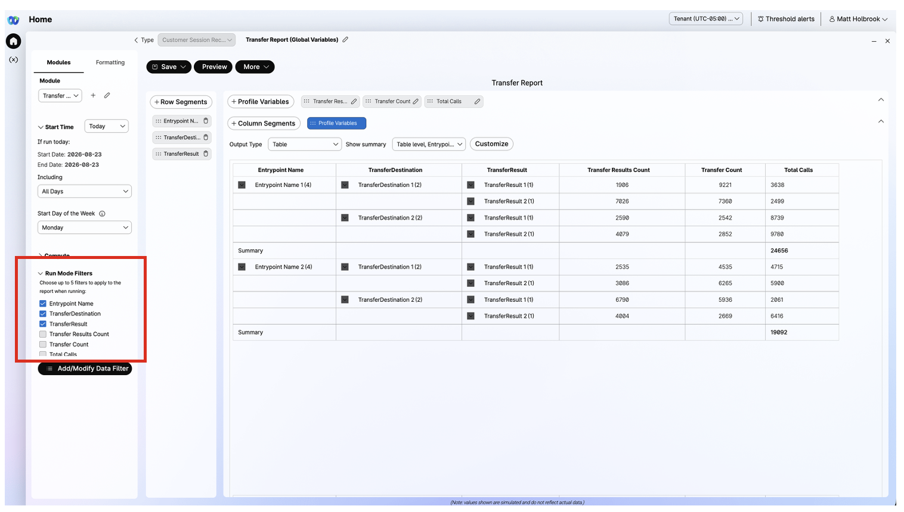
Click on “Add/Modify Data Filter” button
Click on “Select field or measurement” and Select ‘[ACD] TransferDestination”
Click on “Select condition” and select “Does not contain”
Click on the blank condition field and select “(Blank)”
Click Save
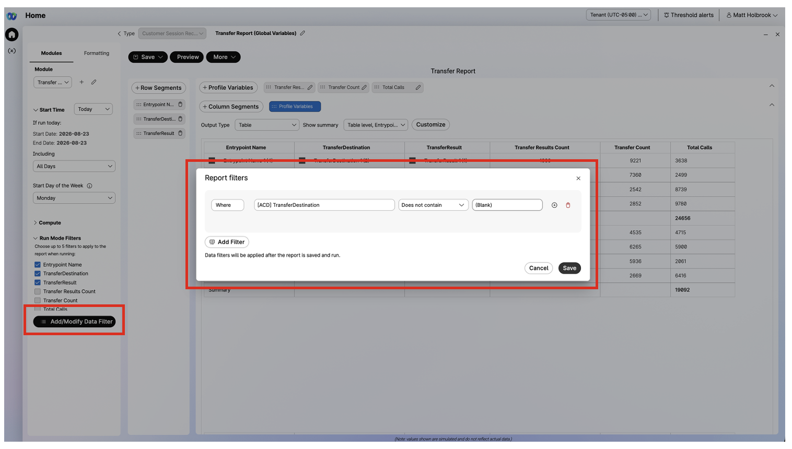
Click the down arrow next to “Start Time” and select “This Year”
Click Save button
Click Preview button
Click on “X” in upper right to go back to folder.
Double click to run the “Queue – Cradle to Grave” semi-custom report
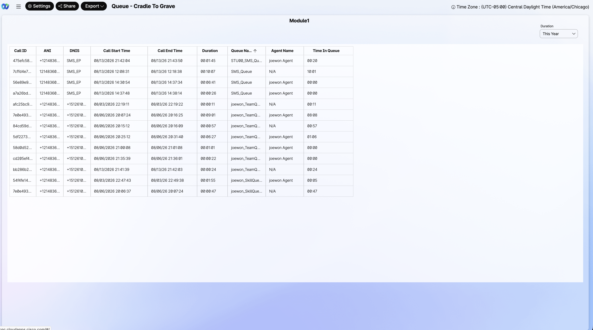
Feel free to explore Visualization Stock Reports and Dashboard Stock Dashboards
Finish Lab 6
{kind=link}
{kind=link}
{kind=link}
{kind=link}
{kind=link}
{kind=link}
{kind=link}
{kind=link}
{kind=link}
{kind=link}
{kind=link}
{kind=link}
{kind=link}
{kind=link}
{kind=link}
{kind=link}
{kind=link}
{kind=link}
{kind=link}
{kind=link}